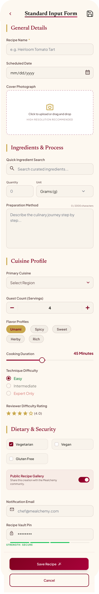

Reusable Input 06
Standard input form.
Full-size view of the recipe creation form, showing general details, ingredients, cuisine profile, dietary controls, security fields, and bottom actions.

Reusable Input 06
Full-size view of the recipe creation form, showing general details, ingredients, cuisine profile, dietary controls, security fields, and bottom actions.
